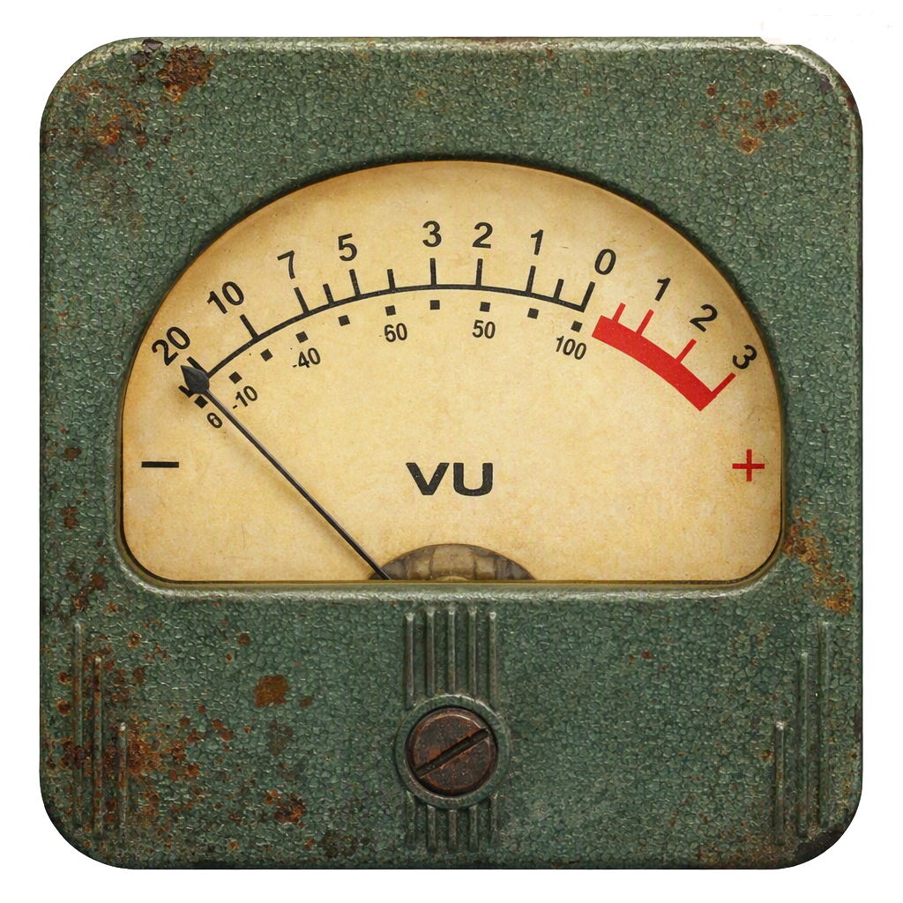

Analog Vibes • Rust • Warm Glow
Hier entsteht ein Ort für alles, was nach warmem, analogen Sound riecht: Gitarren und Bass- Pedale, Röhrenamps, ältere, neuere Gitarren und natürlich Gitarren‑Elektronik.
Altes, benutztes Equipment stahlt für mich eine gewisse Magie aus. Bei entsprechendem "Mojo" nehme ich auch mal etwas Brummen oder Rauschen in Kauf.
